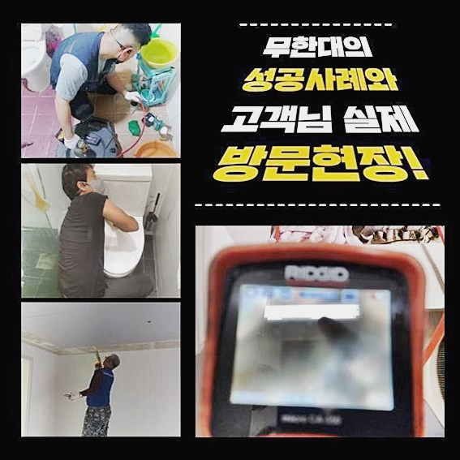
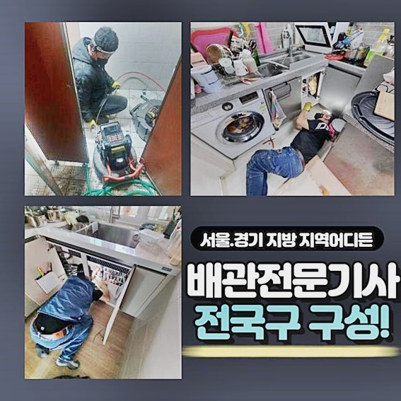
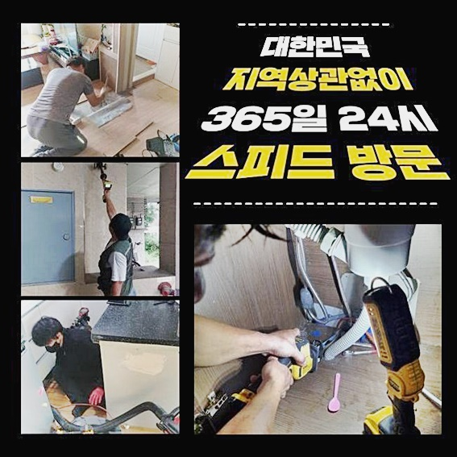
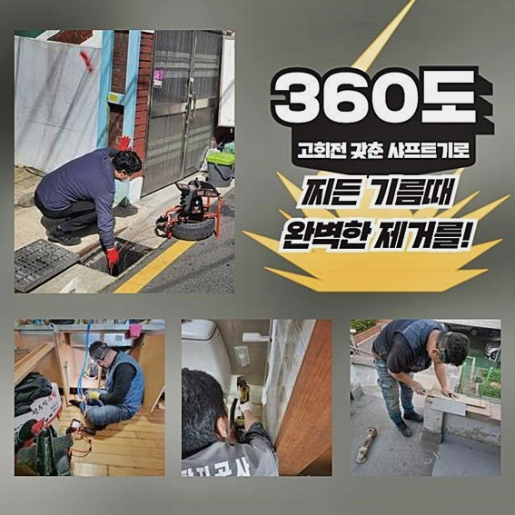
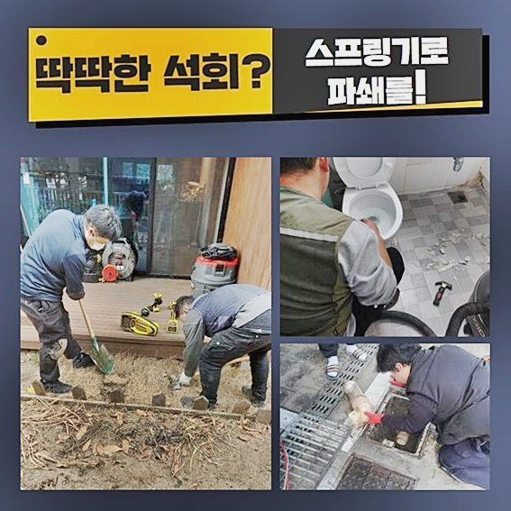
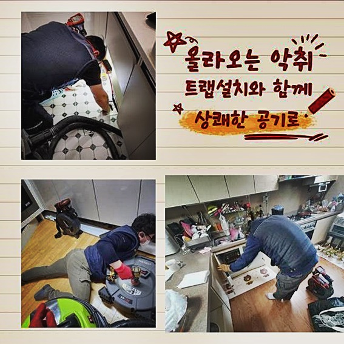

🏠 도봉 쌍문동세탁실막힘 도봉동 하수구뚫어주는곳 누수공사
용인 하수구막힘 전문 시공 후기

📋 작업 개요
- 위치: 용인
- 서비스 유형: 하수구막힘, 배관막힘, 누수수리, 뚫는업체, 배관청소, 고압세척, 설비공사
- 작업 일시: 2024. 6. 12. 16:24
- 업체명: 하수구수사대 (010-5615-2118)
🔍 문제 상황
도봉 쌍문동세탁실막힘 도봉동 하수구뚫어주는곳 누수공사
배수구로부터 갑작스레 막히는 증상이 생겨나면 다양한 측면에서 많은 곤란함들이 생겨납니다
오늘에선 고객님의 사례들을 살피며 증상을 알아보는 시간을 알아볼테니 정독하시면 장점이 있을거란 판단을 해요!
배수관에 이물질들이 쌓이면 배수가 쉽지않아요
증상들이 발발한 경우엔 조속하게 해결해야 피해를 최소화하며 풀어갈수가 있습니다
문제 시에 무분별하게 날카로운 것을 이용하여 수습하기보단 그에 해당하는 기조를 정확히 짚어내고 수리를 진행시키는게 해요!
어떤절차를 실시해 연유를 알아내고 무슨 장비들을 써서 하수관로의 오염물을 제거시키는지 지금부터 보실까요?살펴볼게요!
화장실공간에서 발생된 석회질로 배관이 막혀버린 댁으로 방문드렸는데 고통을 호소하셨던 의뢰인분은 한시라도 신속히 해결할것을 요청해주셨어요
이전에 전문가들이 왔다갔으나 원인파악을 못해서 바로 두 손 놓고 철수했다고 알려주셨습니다
먼저 난처함을 내비치시던 현장에 방문드려 석회물질이 상당하다고 안내주었던 욕실공간에 진입하여 하수도를 이리저리 둘러보니 입구부터 이런저런 잔해하수들이 누적된걸 알게 되었는데요

🔎 원인 분석
💡 전문가 진단: 정밀 진단 장비를 사용하여 슬러지의 고착 여부를 판명하고 타격/세척 작업을 실시했습니다.
입구쪽을 보니 심층부에 해당하는 구간에도 다양한 석회물질이 흡착된걸로 추측해보았습니다
석회질의 청소는 별거아니라고 생각할 수 있겠으나 면밀한 진단과 전문기기를 써서 청소해야 되겠습니다
욕실배수오류 수리를 이행하기전 천장부분을 들여다보고 다른지점에서 작업을 이어갈 사항이 있진않은지 면밀하게 체크했습니다
살펴보니 화장실바닥의 배수로는 하단으로 소재부품이나 자리하고 있지못했던 현장으로서 간단히 조정할 수 있을걸로 보여졌습니다
앞서서 석회성분을 제거시킬 생각으로 분쇄장비로 육가쪽 주변을 일정부분 제거시켰습니다
해당 작업을 거쳐야 하단부의 여타 부품을 제거시켜 세척을 시작해줄 수 있었는데요
글라인더 수리를 잘못한다면 주변 타일들이 깨지게되니 이러한 작업에서는 전문업체가 이행해주어야 작업들이 이뤄집니다
부속을 해체하니 하단에서 머리카락들과 소량의 잔해가 자리잡은걸 확인했는데 이 구간들을 1순위로 청소하기로 했습니다
석션장비들을 배수로 내부에 올바르게 넣어주고 부유하는 여러 이물들이 빠지게끔 청소를 진행해봤는데요
하수관 주변의 주위를 막고서 압력들이 빠져나가지않게끔 강력하게 눌러주어 세척을 진행해주었어요
석션장치를 이용한 다음엔 아랫부분으로 내시경장비를 투입시켜 파악해보았습니다

🔧 작업 과정
아랫부분으로 투입된 내시경기기의 화면으로 다양한 잔해가 제거되지못해 증세가 시정되지 못한걸 확인했습니다
석회질들이 딱딱해진 모습이였으므로 간단히 시정될수 없었으므로 분쇄세척을 통해서 해결하기로 결정했어요
시행할 작업들에 대하여 난감함을 겪으시던 고객분에게 말씀드리고서 재빨리 안에 쌓인 오염물을 사라지게 해주었죠
분쇄작업을 한다면 샤프트기로 석회들을 청소해줘요
이 시점에서도 내시경기기도 넣어주어 깊게 석회들이 있는 부위를 확실하게 특정해야되는데요
청소를 시작할땐 내시경기기가 없다면 어두워서 안보이고 심층부까지 뻗어나간 오염물을 청소하지못해서 투명한 작업들을 할수가 없어요
내시경장비가 투입되고서 같이 확인하시면 무슨방식들로 세척이 가능한지 확인하실 수 있기에 우려하실일은 없어요
난감함을 겪으시던 수리를 할 시 신속한 진행을 도모하고자 유화제들을 이용해서야 할지 판단해야하는데 화학품을 함께 운용하여야 내시경기기와 샤프트기로 스케일링이 행해질 수 있었어요
집중해서 내시경을 확인해주며 작업들을 할때는 배관속에서 말끔히 청소된것을 확인했어요
이물제거가 어느정도 일단락되었으면 잔여물을 석션으로 신속히 빨아들이고 체크해본다면 석회화 된 잔해물들이 없어진것을 알았죠
그 다음엔 부족하게 이물들이 잔존하는 구간이 어디인지 면밀히 관찰하고 남은 여러 이물들이 없어지도록 반복수리를 진행해 배수관막힘을 해결하는 과정만이 남았는데요
세척이 완료되었다면 육가를 원래대로 돌려놓을 목적으로 부착까지 실시했죠
이때 청소를 제대로 못하면 아래 가구로 수도가 샐 수 있어서 꼼꼼히 세척을 해드리고 있답니다
작업들을 해드리고 나서도 내시경장치로 파악해봤습니다
앞서서 하수로에 존재하던 고착물까지 없어지고 말끔해진 하수도의 상황을 확인해보았습니다
해당 과정을 거쳐 세척을 해주어야지만 이전처럼 잔해물이 말썽피우지않고 재발의 위험을 최소화하고 오래도록 유지시킬 수 있어요
그 다음엔 고충을 털어놓았던 하수구쪽으로 많은 양의 물들을 내려주면서 물빠짐이 행해지나 체크해보았더니 빠르고 시원하게 빠지는걸 보았어요


✅ 작업 완료
해당 과정을 거쳐 난처함을 내비치시던은 석회가 문제 주범 1위에요
막히는 증세들은 목격 즉시 해결에 힘써야 손쉽게 시정가능하오니 재빨리 전문가에게 의뢰해 해결하심이 하는 바람입니다
저희는 한시간 전후로 찾아뵙는것이 이뤄지고있고 고객님께 세척을 공개하여 걱정들을 하시지않도록 하고있으니 편하게 전화주세요
설명드린 것 외적 사항중 해결되지 못한 점이 있으시다면 전화주신다음 질의하시면 최선을 다해 도와드릴게요!
해당 안내사항이 의뢰인분에게도 도움되었다면 좋겠어요! 다음시간에 만나요!




⚠️ 베란다 누수 및 방수 관리 방법
- ✅ 비가 많이 올 때 창틀 주변이나 아래층 천장에 얼룩이 생기는지 정기적으로 확인해 보세요.
- ✅ 우수관 주변 실리콘 마감이 들뜨거나 깨진 틈새가 있는지 손상 여부를 수시로 체크하세요.
- ✅ 베란다 바닥 타일의 줄눈(메지)이 소실되면 그 틈으로 물이 침투하여 누수가 유발됩니다.
- ✅ 누수 의심 증상 발견 시 방치하면 아래층 손실이 커지므로 즉시 전문가의 진단을 받으십시오.
💡 핵심 정리
- 확실한 장비 작업(내시경 점검 및 샤프트 스케일링)으로 원인을 뿌리 뽑습니다.
- 작업 후 1년 이내에 동일한 부위 재발 시 100% 무상 A/S 서비스를 보장합니다.
- 서울 · 경기 · 인천 전 지역에 24시간 언제든 긴급 출동할 수 있도록 항시 대기 중입니다.
❓ 자주 묻는 질문 (FAQ)
🚨 용인 하수구막힘 문제로 고민이신가요?
정확한 원인 진단과 확실한 시공으로 재발 없는 해결을 약속드립니다.
24시간 긴급 출동 | 서울 · 경기 · 인천 전지역 | 1년 내 재발 시 무상 A/S